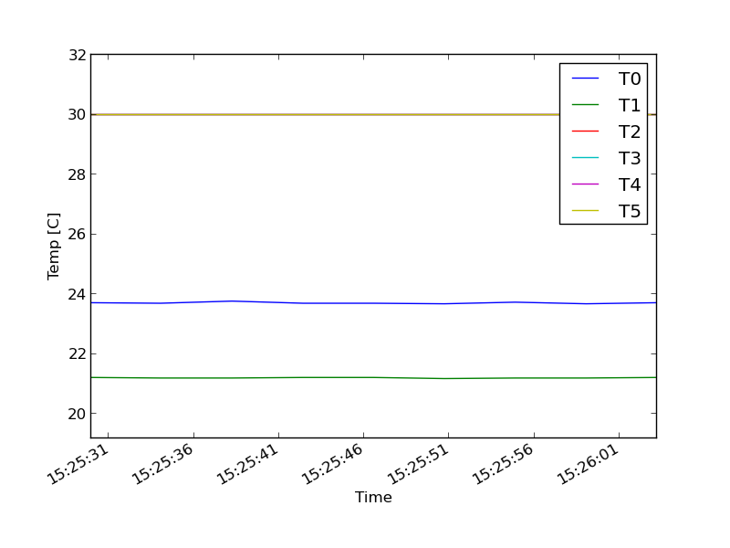

This page will refresh every 5 seconds. This is because we're using the 'onload' event to call our function. We are passing in the value '5000', which equals 5 seconds.
But hey, try not to annoy your users too much with unnecessary page refreshes every few seconds!